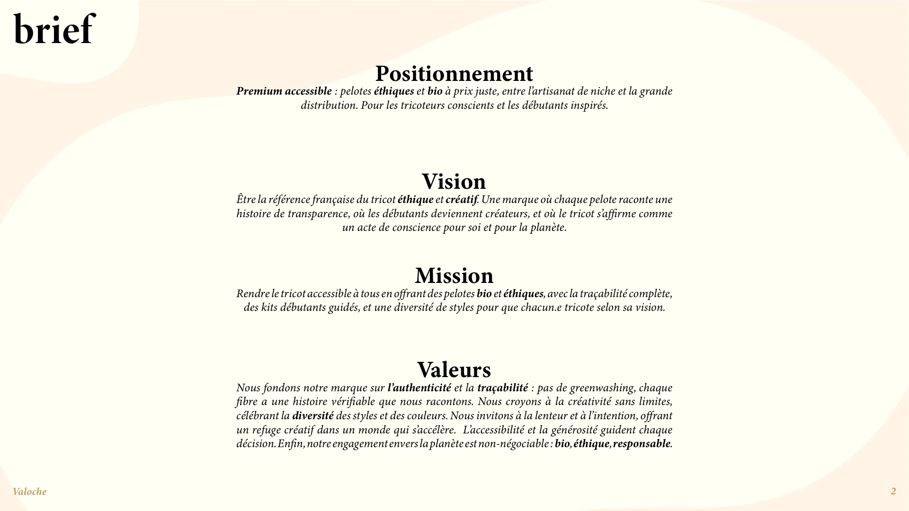
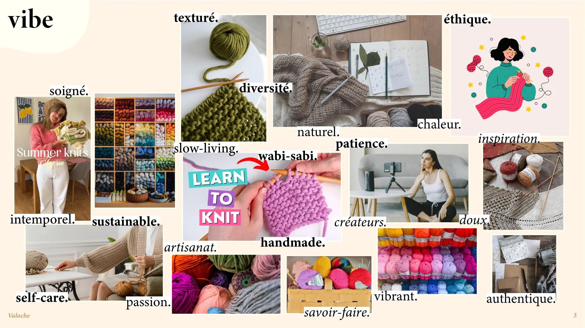
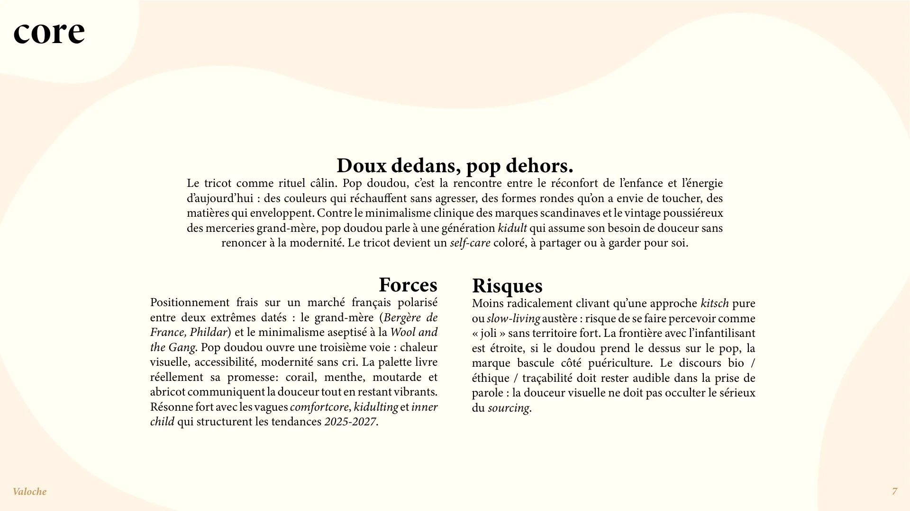
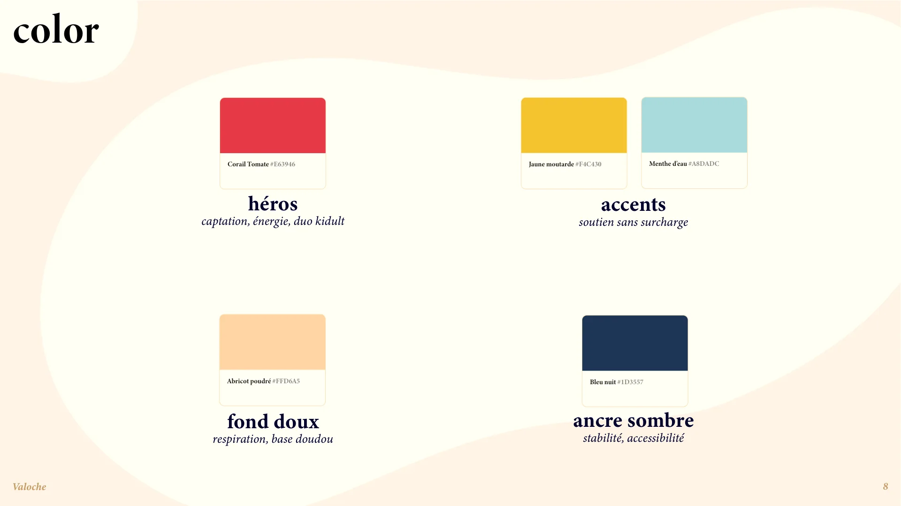
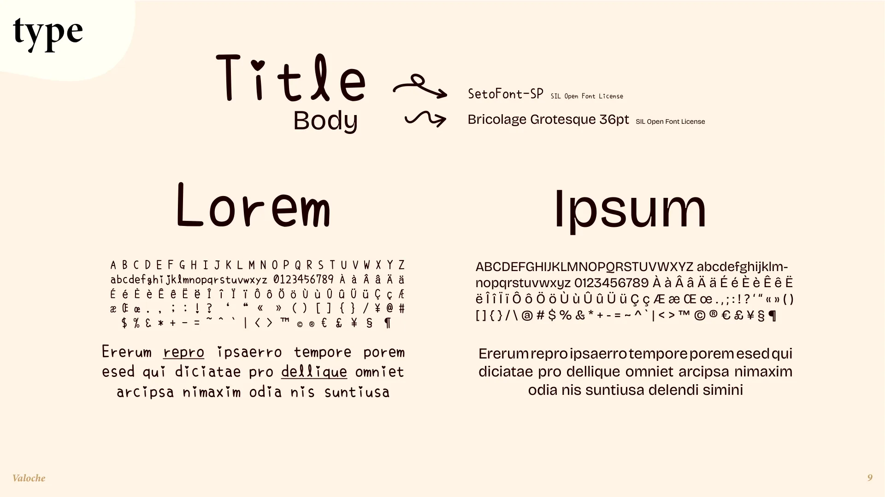
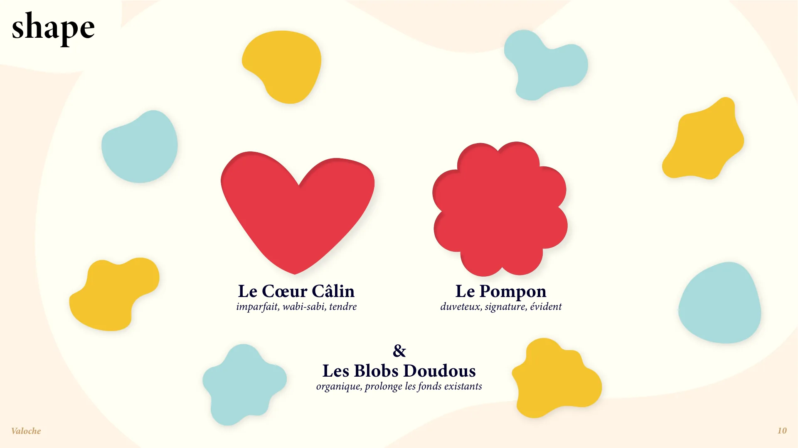
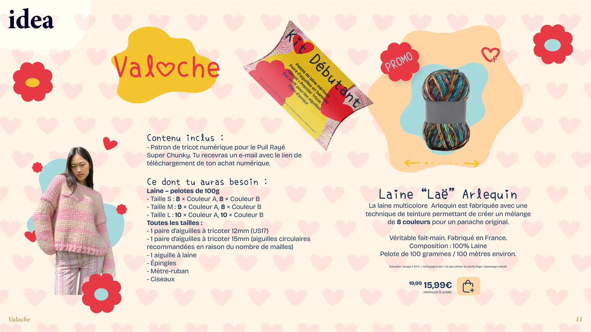

Valoche · identité visuelle
Pop Doudou
Doux dedans, pop dehors.
Une direction artistique pour Valoche, une boutique en ligne imaginaire de pelotes bio et éthiques. Pop Doudou mêle le réconfort de l’enfance et l’énergie d’aujourd’hui : des couleurs chaudes, des formes rondes qu’on a envie de toucher, et le tricot vu comme un rituel câlin plutôt qu’un passe-temps de grand-mère.
- Type
- Projet personnel
- Année
- 2026
- Rôle
- Direction artistique, identité visuelle
- Outils
- Illustrator, InDesign, Photoshop






